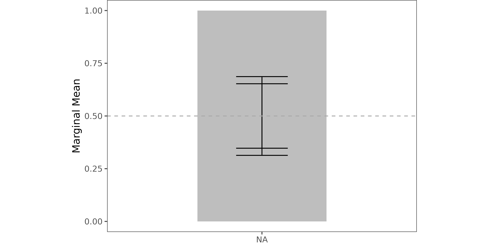
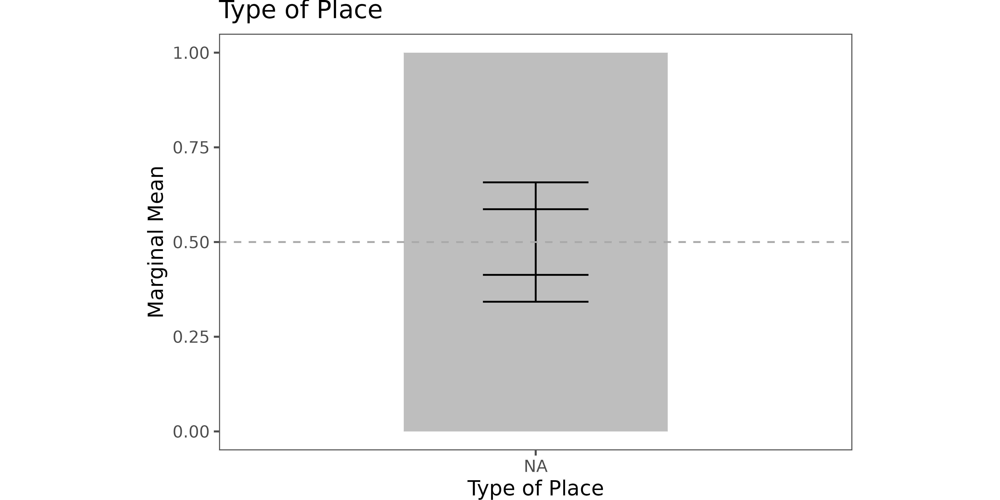
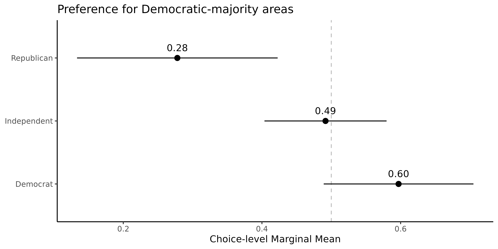

Analyze and Visualize Important QOIs
analyze.RmdüéØ Estimate Corrected MMs or AMCEs
In conjoint analysis, default MMs and AMCEs can be biased due to measurement error from intra-respondent variability.
projoint corrects for this bias automatically.
The following instructions apply to choice-level data. What if you have profile-level data?ⓘ Our FAQ Page has instructions to estimate and visualize profile-level QOIs.
üì¶ Prepare Example Data
outcomes <- paste0("choice", 1:8)
outcomes <- c(outcomes, "choice1_repeated_flipped")
out1 <- reshape_projoint(exampleData1, outcomes)üõ†Ô∏è Why Use IDs (e.g., att1, level1)?
Before estimating quantities, it’s important to understand how attribute and level IDs work inside projoint.
We recommend working with attribute IDs rather than actual text labels because:
- Safer against special characters, languages, or typos
- Allows multiple attributes to have identical labels (e.g., “High” for both “Teaching Quality” and “Research Quality”)
Check attribute-level mappings:
out1$labels## # A tibble: 24 × 4
## attribute level attribute_id level_id
## <chr> <chr> <chr> <chr>
## 1 Housing Cost 15% of pre-tax income att1 att1:leve…
## 2 Housing Cost 30% of pre-tax income att1 att1:leve…
## 3 Housing Cost 40% of pre-tax income att1 att1:leve…
## 4 Presidential Vote (2020) 30% Democrat, 70% Republican att2 att2:leve…
## 5 Presidential Vote (2020) 50% Democrat, 50% Republican att2 att2:leve…
## 6 Presidential Vote (2020) 70% Democrat, 30% Republican att2 att2:leve…
## 7 Racial Composition 50% White, 50% Nonwhite att3 att3:leve…
## 8 Racial Composition 75% White, 25% Nonwhite att3 att3:leve…
## 9 Racial Composition 90% White, 10% Nonwhite att3 att3:leve…
## 10 Racial Composition 96% White, 4% Nonwhite att3 att3:leve…
## # ℹ 14 more rowsYou can also save these labels for easier editing:
save_labels(out1, "labels.csv")üìà Estimate Marginal Means (MMs)
Choice-Level MMs (Specific Level)
qoi_2 <- set_qoi(
.structure = "choice_level",
.att_choose = "att1",
.lev_choose = "level3",
.att_notchoose = "att1",
.lev_notchoose = "level1"
)
mm2 <- projoint(out1, .qoi = qoi_2, .ignore_position = FALSE)
print(mm2)##
## Projoint results object
## -------------------------
## Estimand: mm
## Structure: choice_level
## Standard error method: analytical
## IRR: Estimated
## Tau: 0.172
## Number of estimates: 2
summary(mm2)##
## Summary of Projoint Estimates
## ------------------------------
## Estimand: mm
## Structure: choice_level
## Standard error method: analytical
## SE type (lm_robust): CR2 (clustered by id)
## IRR: Estimated
## Tau: 0.172## # A tibble: 2 × 7
## estimand estimate se conf.low conf.high att_level_choose
## <chr> <dbl> <dbl> <dbl> <dbl> <chr>
## 1 mm_uncorrected 0.402 0.0273 0.348 0.456 att1:level3
## 2 mm_corrected 0.351 0.0430 0.266 0.436 att1:level3
## # ℹ 1 more variable: att_level_notchoose <chr>üìâ Estimate AMCEs
Choice-Level AMCEs (Specific Level)
qoi_4 <- set_qoi(
.structure = "choice_level",
.estimand = "amce",
.att_choose = "att1",
.lev_choose = "level3",
.att_notchoose = "att1",
.lev_notchoose = "level1",
.att_choose_b = "att1",
.lev_choose_b = "level2",
.att_notchoose_b = "att1",
.lev_notchoose_b = "level1"
)
amce2 <- projoint(out1, .qoi = qoi_4, .ignore_position = TRUE)
print(amce2)##
## Projoint results object
## -------------------------
## Estimand: amce
## Structure: choice_level
## Standard error method: analytical
## IRR: Estimated
## Tau: 0.172
## Number of estimates: 2
summary(amce2)##
## Summary of Projoint Estimates
## ------------------------------
## Estimand: amce
## Structure: choice_level
## Standard error method: analytical
## SE type (lm_robust): CR2 (clustered by id)
## IRR: Estimated
## Tau: 0.172## # A tibble: 2 × 9
## estimand estimate se conf.low conf.high att_level_choose
## <chr> <dbl> <dbl> <dbl> <dbl> <chr>
## 1 amce_uncorrected -0.0135 0.0269 -0.0665 0.0394 att1:level3
## 2 amce_corrected -0.0206 0.0412 -0.102 0.0604 att1:level3
## # ℹ 3 more variables: att_level_notchoose <chr>,
## # att_level_choose_baseline <chr>, att_level_notchoose_baseline <chr>üîé Predict Intra-Respondent Reliability (IRR)
If your design does not include a repeated task, you can predict IRR using predict_tau(), based on observed respondent behavior.
Predict IRR Using predict_tau()
data(out1_arranged)
predicted_irr <- predict_tau(out1_arranged)
print(predicted_irr)## Tau estimated using the extrapolation method: 0.743
summary(predicted_irr)## # A tibble: 8 × 2
## x predicted
## <int> <dbl>
## 1 0 0.743
## 2 1 0.709
## 3 2 0.675
## 4 3 0.640
## 5 4 0.606
## 6 5 0.572
## 7 6 0.537
## 8 7 0.503
plot(predicted_irr)
üé® Visualize MMs or AMCEs
The projoint package provides ready-to-publish plotting tools for conjoint analysis results.
Note: The current version
of projoint supports plotting choice-level MMs
only.
Support for choice-level AMCEs will be available in
future updates!
⚖️ Choice-Level Analysis
Estimate
- Specify your quantity of interest:
qoi_mm <- set_qoi(
.structure = "choice_level", # default
.att_choose = "att1",
.lev_choose = "level1",
.att_notchoose = "att1",
.lev_notchoose = "level3"
)- Estimate
choice_mm <- projoint(
.data = out1_arranged,
.qoi = qoi_mm,
.ignore_position = TRUE
)Visualize (Levels)
plot(choice_mm)Visualize (Differences)
plot(choice_mm, .type = "pointrange")üåü Explore and Compare Further
Choice-level analysis opens the door to many new research questions that traditional profile-level analysis often overlooks. This article demonstrates how to estimate deeper quantities and compare subgroups effectively.
üì¶ Setup
We use the already wrangled and cleaned data
out1_arranged.
out1_arranged$labels## # A tibble: 24 × 4
## attribute level attribute_id level_id
## <chr> <chr> <chr> <chr>
## 1 Housing Cost (Pre-tax Income) 15% att1 att1:leve…
## 2 Housing Cost (Pre-tax Income) 30% att1 att1:leve…
## 3 Housing Cost (Pre-tax Income) 40% att1 att1:leve…
## 4 Presidential Vote (2020) 50% Dem, 50% Rep att2 att2:leve…
## 5 Presidential Vote (2020) 30% Dem, 70% Rep att2 att2:leve…
## 6 Presidential Vote (2020) 70% Dem, 30% Rep att2 att2:leve…
## 7 Racial Composition 50% White, 50% Nonwhite att3 att3:leve…
## 8 Racial Composition 75% White, 25% Nonwhite att3 att3:leve…
## 9 Racial Composition 90% White, 10% Nonwhite att3 att3:leve…
## 10 Racial Composition 96% White, 4% Nonwhite att3 att3:leve…
## # ℹ 14 more rows⚖️ Explore: Compare Trade-offs Directly
Example: Low Housing Costs vs. Low Crime Rates
qoi_1 <- set_qoi(
.structure = "choice_level",
.att_choose = "att1",
.lev_choose = "level1",
.att_notchoose = "att6",
.lev_notchoose = "level2"
)
mm1 <- projoint(.data = out1_arranged,
.qoi = qoi_1,
.structure = "choice_level",
.ignore_position = TRUE)
plot(mm1,
.labels = c("Housing Cost\n(15% of pre-tax income)",
"Violent Crime Rate\n(20% > National Average)")) +
labs(y = "Marginal Mean", x = NULL) +
coord_cartesian(ylim = c(0, 1)) +
geom_hline(yintercept = 0.5, linetype = "dashed", color = "darkgray")## The attributes are different between the two levels. Check your setting carefully. The attribute label is not added to the figure.
üß© Explore: Compare Multiple Levels Simultaneously
Example: Urban vs. Suburban Preferences
qoi_2 <- set_qoi(
.structure = "choice_level",
.att_choose = "att7",
.lev_choose = c("level2", "level3"),
.att_notchoose = "att7",
.lev_notchoose = c("level5", "level6")
)
mm2 <- projoint(.data = out1_arranged,
.qoi = qoi_2,
.structure = "choice_level",
.ignore_position = TRUE)
plot(mm2,
.labels = c("City", "Suburban")) +
labs(y = "Marginal Mean", x = "Type of Place") +
coord_cartesian(ylim = c(0, 1)) +
geom_hline(yintercept = 0.5, linetype = "dashed", color = "darkgray")
üìä Compare: Subgroup Differences
Choice-Level Subgroup Comparison: Party Differences
df_D <- exampleData1 %>% filter(party_1 == "Democrat") %>% reshape_projoint(outcomes)
df_R <- exampleData1 %>% filter(party_1 == "Republican") %>% reshape_projoint(outcomes)
df_0 <- exampleData1 %>% filter(party_1 %in% c("Something else", "Independent")) %>% reshape_projoint(outcomes)
qoi <- set_qoi(
.structure = "choice_level",
.estimand = "mm",
.att_choose = "att2",
.lev_choose = "level3",
.att_notchoose = "att2",
.lev_notchoose = "level1"
)
out_D <- projoint(df_D, qoi)
out_R <- projoint(df_R, qoi)
out_0 <- projoint(df_0, qoi)
out_merged <- bind_rows(
out_D$estimates %>% mutate(party = "Democrat"),
out_R$estimates %>% mutate(party = "Republican"),
out_0$estimates %>% mutate(party = "Independent")
) %>% filter(estimand == "mm_corrected")
# Plot
ggplot(out_merged, aes(y = party, x = estimate)) +
geom_vline(xintercept = 0.5, linetype = "dashed", color = "gray") +
geom_pointrange(aes(xmin = conf.low, xmax = conf.high)) +
geom_text(aes(label = format(round(estimate, 2), nsmall = 2)), vjust = -1) +
labs(y = NULL, x = "Choice-level Marginal Mean",
title = "Preference for Democratic-majority areas") +
theme_classic()
üè† Home: Home